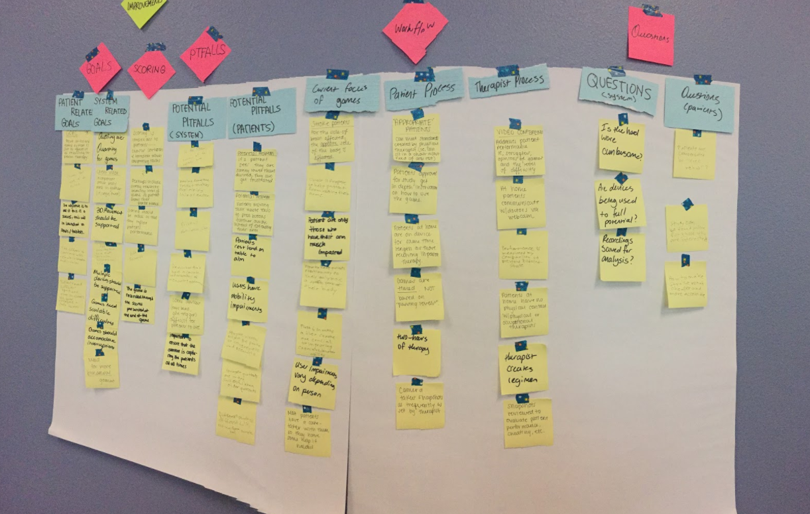

mad's portfolio
Stroke Rehabilitation |
IntroductionIntroduction In this project, I was paired with two other Informatics majors and two Biology majors. The goal of this project is to create a telerehabilitation game system mockup for stroke patients that takes place in a 3D environment and a game that utilizes two different devices. In addition these games need to be equipped with scalable difficulties. My team and I worked closely with Dr. Cramer and his team who are in charge of the usage of this system. |
* Diagramming and Discovery *In order to understand the system and the game controllers provided used alongside of the system, my team and I decided to do some research+brainstorming of our own through various teamwork activities such as sequence diagrams, affinity diagrams, and interviews. |
 |
* Games: Rhythm Game *The rhythm game consisted of the patient participating in the game with the song playing in the background. This game fulfilled the goal of utilizing two different devices. Through this game, the patients are able to work specifically on their motor skills that needs to be focused on with the usage of the game controllers designed by the doctor himself. Through many meetings with the doctor and his team, my team and I were able to gather information to strategize this game by making it efficient to the patient’s health improvement and enjoyable as well. |
* Games: Bottle Game *The bottle game was created to fulfill the other goal specified by the client: game that takes place in a 3D environment. The bottle game is a spinoff of the pin the tail on the donkey game, except the patients would be exposed to beverages instead. The goal of the game is to allow the patients to move their body “into” the direction of the screen; virtually choosing a bottle from a shelf. Specific instructions are given throughout the game to pick a certain color and shape of the bottle which will be placed in the basket. |
Prototype |
Results/Conclusions/ReflectionResult/Conclusion/Reflection This project is one of the most memorable project that I have ever participated in throughout my college career. I was able to work closely with a team of doctors and examine the work that they do first hand. When creating these games, it allowed me to put myself in the patients’ position which led me to fully understand a user’s experience of a system. Once this project was over, the client was very happy with the outcome that he extended an offer for us to participate in the implementation stage of the project. Unfortunately, due to commitments to other projects in other classes and the dawning of graduation, my team and I were not able to participate in the next stage of this project. |